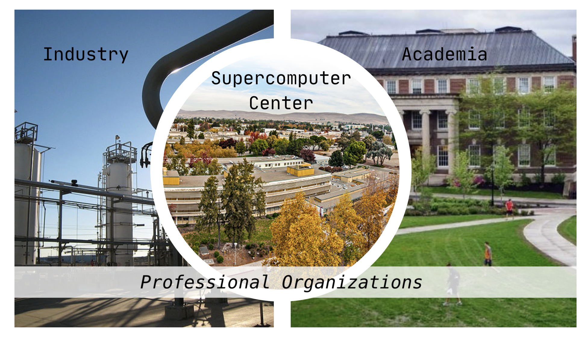

Created: 2025-07-07 Mon 10:23
| 20 min | Career Paths Talk |
| 35 min | Returning Mentor Career Talks |
| 20 min | Staff introductions |
| Lunch | Break into mentoring groups for lunch |
| Sit together, do goal setting handout | |
| Return Early | IF you need to test your Bridges-2 account |
| 14:00 | Split into parallel sessions |

titles may be different in different countries
many paths available, depending on role
those who regularly use expertise in programming to advance research. This includes researchers who spend a significant amount of time programming, full-time software engineers writing code to solve research problems, and those somewhere in-between. We aspire to apply the skills and practices of software development to research to create more robust, manageable, and sustainable research software.
Created with Emacs, Org Mode, and RevealJS
(using the Robot Lung theme).
View the source.